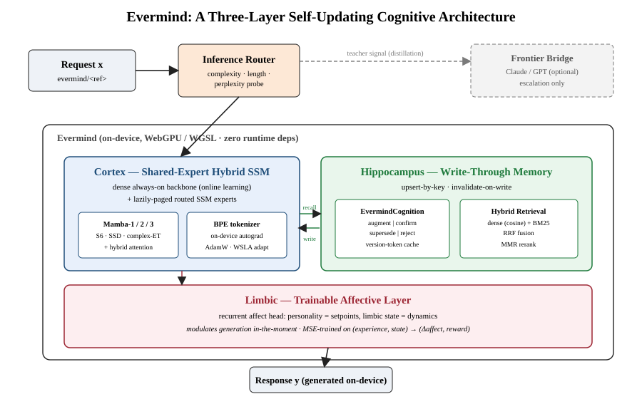
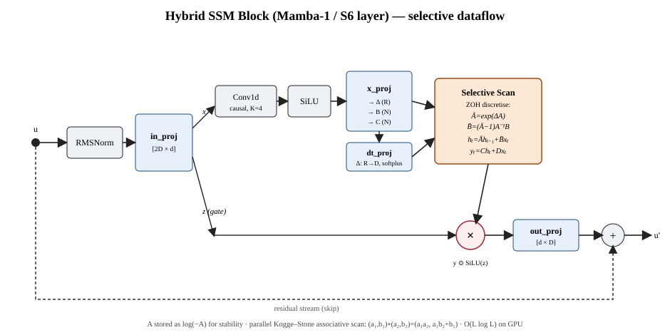
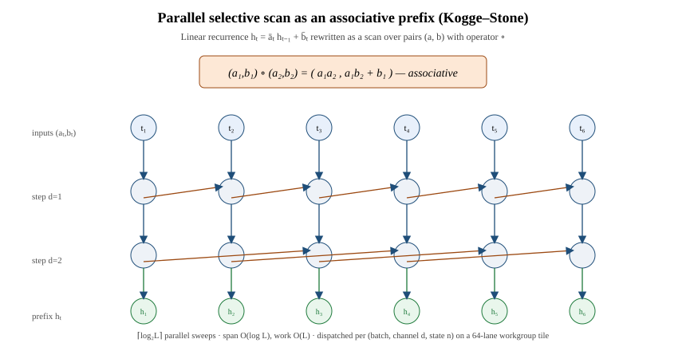
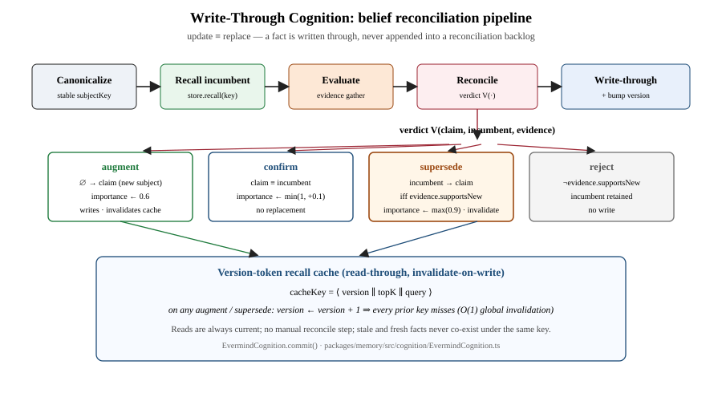
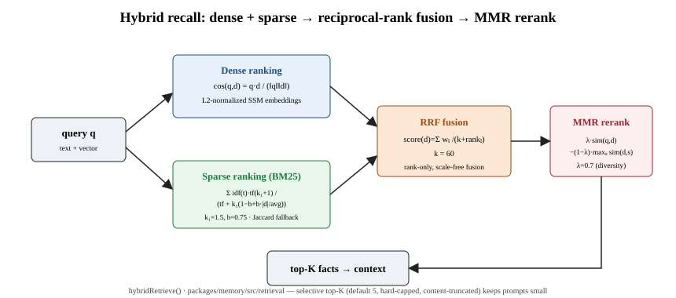
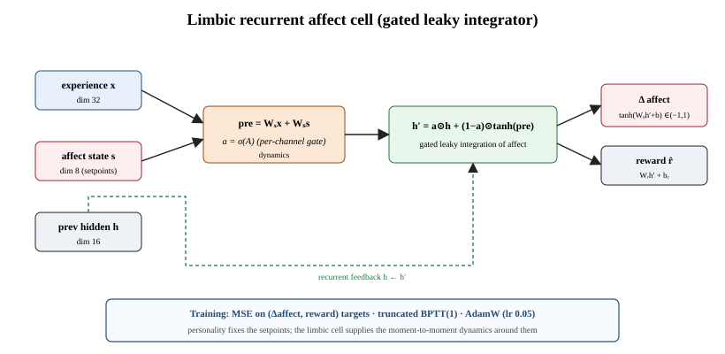
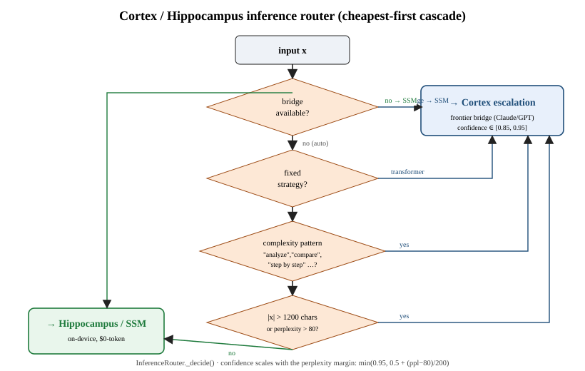

Builderforce.ai · Correspondence: seanhogg@gmail.com
Technical Report, 2026 · Reference implementation: builderforce-memory (engine / runtime / MCP), v2026.6.35
Abstract—Frontier large language models (LLMs) are frozen: their parametric knowledge is fixed at a training cutoff, updates require an expensive retrain cycle, and bolt-on retrieval grows an append-only store in which stale and current facts accumulate under distinct keys until reconciled by hand. We present Evermind, a cognitive architecture that treats currency, not scale, as the primary design axis. Evermind is organized as three cooperating layers mirroring a coarse neuro-functional decomposition: a cortex — a shared-expert hybrid selective state-space model (SSM) performing linear-time generation with on-device gradient updates; a hippocampus — a write-through knowledge memory governed by a reconciliation operator that replaces beliefs on write rather than appending them; and a limbic layer — a small trainable recurrent affect head that modulates generation. We formalize each layer. For the cortex we give the selective-scan recurrence, its zero-order-hold and exponential-trapezoidal discretizations, and the SSD and complex-valued variants, and we prove the recurrence is a monoid scan admitting an \(O(L\log L)\)-span parallel evaluation. For the hippocampus we define Write-Through Cognition, prove it maintains a single-incumbent invariant (no reconciliation backlog), and show a version-token recall cache yields \(O(1)\) global invalidation on every belief replacement. The system runs entirely on WebGPU with zero runtime dependencies and exports to portable formats (safetensors, ONNX, GGUF, Hugging Face). We are explicit about validation status: the architecture, kernels, reconciliation algorithm, benchmarking harness, and export pipeline are implemented and tested (ONNX logit parity \(<10^{-5}\) against the reference forward pass); the comparative currency, footprint, and ownership theses against frozen LLMs are stated as falsifiable hypotheses with a measurement protocol whose language-model metrics — held-out perplexity, bits-per-token, next-token accuracy, throughput, and pairwise model A/B — are now computed by a shipped, on-device benchmarking harness; the comparative results themselves are not yet empirically established. We invite replication and adversarial review.
Index Terms—State-space models, Mamba, selective scan, continual learning, retrieval-augmented generation, write-through cache, on-device inference, WebGPU, knowledge editing, affective computing.
The dominant paradigm in language modeling couples a very large Transformer [1] with a fixed training corpus. This design buys breadth of capability at the cost of temporal rigidity: the model's beliefs are crystallized at a cutoff date, and the only sanctioned route to a new belief is a new training run. Retrieval-augmented generation (RAG) [2] mitigates the symptom by attaching an external store, but conventional stores are append-only: a corrected fact is added alongside the fact it corrects, and the contradiction is deferred to retrieval-time ranking or a manual reconciliation job. The model never truly learns; it accumulates.
This paper asks a different question. Instead of “how do we make the largest possible frozen model?”, we ask “what is the smallest coherent system whose knowledge is always current by construction, that owns its own generation, and that fits inside the runtime where the work happens?” Our answer, Evermind, rests on three commitments: (1) linear-time, trainable generation via a selective SSM [3], [4] cheap enough to update online on the serving device; (2) write-through knowledge, where update is replacement keyed by a stable subject identifier, so reads are always current and there is no reconciliation backlog; and (3) on-device, dependency-free execution on WebGPU, exportable to portable formats.
We deliberately frame Evermind as a systems and architecture contribution. The thesis that an always-current small model can outperform a frozen frontier model on knowledge-sensitive tasks is attractive but, as of this writing, unproven; Section IX states it as a hypothesis with a test protocol rather than reporting a result we have not earned. What we do claim, and substantiate, is that the architecture is well-defined, internally consistent, implemented, and that its core algorithms have the formal properties we prove.
Contributions. (i) a formal specification of a three-layer cognitive architecture (Fig. 1) and its inter-layer contracts; (ii) a consolidated mathematical treatment of the hybrid selective-scan cortex (S6, SSD, complex ET) with a proof that the recurrence is a monoid scan (Prop. 1); (iii) Write-Through Cognition: a formal reconciliation operator, a single-incumbent invariant (Thm. 1), and an \(O(1)\) version-token invalidation scheme (Prop. 3); (iv) a perplexity-aware inference router and an online distillation loop; (v) an honest validation account separating tested from hypothesized claims, with a reproducible protocol and a shipped, on-device benchmarking harness that implements its language-model metrics.
State-space sequence models. Structured state-space layers [5] gave \(O(L)\) sequence modeling; Mamba [3] made the dynamics input-selective (S6) with a hardware-aware parallel scan; Mamba-2 [4] recast the selective scan as structured state-space duality (SSD), exposing a matrix-multiply form. Evermind's cortex implements S6, SSD, and a complex-valued MIMO variant with exponential-trapezoidal discretization, plus optional attention [1] layers in a hybrid schedule.
Continual learning and knowledge editing. Continual learning fights catastrophic forgetting [6]; editing methods such as ROME [7] perform localized parametric edits. Evermind differs in where currency lives: factual currency is delegated to a write-through symbolic memory with explicit replacement semantics, while the parametric cortex adapts slowly via selective online distillation, sidestepping the credit-assignment fragility of editing weights per fact.
Retrieval augmentation. RAG [2], dense retrieval [8], rank fusion (RRF) [9], and diversity reranking (MMR) [10] are standard for recall. Evermind uses these but adds the missing write discipline: its store is reconciled, not appended.
On-device and affective modeling. We run SSM training (not just inference) on WebGPU with no ML-framework dependency. The limbic layer relates to affective computing [11]: personality is encoded as fixed setpoints, the limbic cell supplies bounded dynamics.
A request \(x\) enters an inference router (Section VII) that decides whether to serve \(x\) from the on-device cortex or escalate to an optional frontier bridge. The cortex (Section IV) generates language; before and during generation it recalls from and writes through to the hippocampus (Section V); the limbic layer (Section VI) modulates the response. All three layers are differentiable and trainable on the serving device.

Notation. \(d\) is model width (dModel); \(D=ed\) the expanded inner width with expansion \(e\); \(N\) the SSM state dimension; \(L\) sequence length; \(H\) heads; \(K\) the causal convolution width. Default reference configuration: \(d{=}512,\ e{=}2\Rightarrow D{=}1024,\ N{=}16,\ K{=}4,\ H{=}4,\ L_{\text{layers}}{=}8\).
A single SSM channel maintains \(h_t\in\mathbb{R}^N\) under an input-dependent linear recurrence. The continuous system \(\dot h=Ah+Bx,\ y=Ch\) is discretized per token with a selective step \(\Delta_t\). For stability \(A\) is stored in log-space as \(a=\log(-A)\) so \(A_{\text{cont}}=-\exp(a)<0\). Zero-order hold gives
$$\Delta_t = \operatorname{softplus}(\delta_t)=\log(1+e^{\delta_t}),$$ $$\bar A_t = \exp(\Delta_t A_{\text{cont}}),\qquad \bar B_t = \frac{\bar A_t-1}{A_{\text{cont}}}\,B_t,$$and the discrete recurrence and readout are
$$h_t = \bar A_t\odot h_{t-1} + \bar B_t\,x_t,\qquad y_t = C_t^{\top}h_t + D\,x_t,$$where \(\odot\) is the Hadamard product and \(D\) a learned skip. Selectivity: \(\Delta_t,B_t,C_t\) are projected from \(x_t\), so the dynamics depend on content. These equations are exactly the kernel in selective_scan.ts:5–71.
With input \(u\in\mathbb{R}^d\) and a residual stream:
$$\tilde u=\operatorname{RMSNorm}(u)=\frac{u}{\sqrt{\tfrac1d\sum_i u_i^2+\epsilon}}\odot\gamma,\quad [x,z]=W_{\text{in}}\tilde u,$$ $$x'=\operatorname{SiLU}(\operatorname{Conv1d}_K(x)),\quad \operatorname{SiLU}(v)=v\,\sigma(v),$$ $$[\Delta,B,C]=W_x x',\quad y=\operatorname{SelectiveScan}(x',\Delta,B,C,D),$$ $$o=W_{\text{out}}\big(y\odot\operatorname{SiLU}(z)\big),\qquad u'=u+o.$$The gate \(\operatorname{SiLU}(z)\) is the standard gated-SSM nonlinearity; RMSNorm uses no mean subtraction. Tensor shapes follow mamba1_block.ts:125–144.

The SSD variant collapses \(A\) to one scalar per head with a chunked scan. With \(\Delta_t=\operatorname{softplus}(\delta_t+\delta_{\text{bias}})\) and per-head log rate \(A_{\log}\),
$$\bar A_t=\exp\!\big(-\operatorname{softplus}(A_{\log})\,\Delta_t\big),\qquad h_t=\bar A_t h_{t-1}+B_t x_t.$$Because \(\bar A_t\) is a scalar gate, a length-\(L\) chunk admits the dual matrix form \(Y=(\mathcal L\odot CB^{\top})X\) with \(\mathcal L_{ij}=\prod_{k=j+1}^{i}\bar A_k\) for \(i\ge j\), else \(0\) (ssd.ts:80,114). Grouping \(B,C\) into \(G\) groups (default \(G{=}1\)) trades expressivity for memory.
The Mamba-3 layer carries complex state \(h_t\in\mathbb{C}^{N/2}\) (interleaved re/im), with \(A=\exp(\rho+i\theta)\). The exponential-trapezoidal (ET) discretization uses the exact complex update
$$\bar A_t=\exp(\Delta_t\rho)\big(\cos(\Delta_t\theta)+i\sin(\Delta_t\theta)\big),$$ $$\bar B_t=(\bar A_t-1)A^{-1}B_t,\qquad y_t=\Re\big(C_t^{\top}h_t\big),$$giving oscillatory eigenmodes (rotations on the unit circle scaled by \(e^{\Delta\rho}\)) a real diagonal \(A\) cannot represent (complex_ssd.ts:70–85).
Associativity: for three pairs, both bracketings give first component \(a_1a_2a_3\) and second \(a_1a_2b_3+a_1b_2+b_1\); identity is immediate. For the prefix, induct on \(t\): the partial product equals \(\big(\prod_{k\le t}a_k,\ \sum_{k\le t}(\prod_{j>k}a_j)b_k\big)\), whose second component is \(a_t\sum_{k
Immediate from Prop. 1 and the standard parallel-prefix result for associative operators. The implementation tiles time into 64-lane workgroups dispatched over \((\lceil D/8\rceil,\lceil N/8\rceil,\text{batch})\) (selective_scan.ts:74–146).
On commodity GPUs this realizes the \(O(L)\)-work, \(O(\log L)\)-span profile characteristic of selective SSMs, in contrast to the \(O(L^2)\) work of dense attention.

A tape-based reverse-mode autograd (autograd.ts) records each forward op as a closure replayed in reverse. The loss is token cross-entropy
optimized with decoupled-weight-decay AdamW [12] on the GPU (weight_update.ts):
with bias-corrected moments, defaults \(\eta{=}10^{-4},\beta_1{=}0.9,\beta_2{=}0.999,\lambda{=}0.01\), global-norm clipping at \(1.0\). Weight-Selective Layer Adaptation (WSLA) restricts online updates to the selective-projection rows emitting \(B,C\) — the \(2GN\) rows of \(W_{\text{in}}\) that route content into state — freezing the bulk representation (mamba2_block.ts:299–309). This makes the distillation loop (Section VIII) cheap enough to run in a few epochs on-device.
Caching keeps answers fresh; Evermind's hippocampus keeps knowledge fresh. We formalize it as a write-through cache with an explicit conflict resolver over beliefs.
Every candidate belief passes through one pipeline (Fig. 4): canonicalize → recall incumbent → evaluate evidence → reconcile → write-through. Let \(\sigma=\Sigma(k)\) be the incumbent (possibly \(\bot\)) and \(\varepsilon\in\{\textsc{supportsNew},\neg\textsc{supportsNew}\}\) an evidence verdict. The operator \(V\) returns:
$$V(k,c,\sigma,\varepsilon)=\begin{cases} \textsf{augment}, & \sigma=\bot,\ \iota\leftarrow0.6\\ \textsf{confirm}, & \sigma=c,\ \iota\leftarrow\min(1,\iota+0.1)\\ \textsf{supersede}, & \sigma\neq c,\ \varepsilon=\textsc{supportsNew},\ \iota\leftarrow\max(0.9,\iota)\\ \textsf{reject}, & \sigma\neq c,\ \varepsilon=\neg\textsc{supportsNew} \end{cases}$$with write rule \(\Sigma'(k)=c\) if \(V\in\{\textsf{augment},\textsf{supersede}\}\), else \(\Sigma'(k)=\sigma\). This is EvermindCognition.commit() (EvermindCognition.ts:80–116).

\(\Sigma\) is a partial function, so it maps each \(k\) to at most one content. Induct on commits: the empty store satisfies the claim vacuously; the write rule only overwrites \(\Sigma(k)\) (augment/supersede) or leaves it unchanged (confirm/reject), so after each step \(\Sigma(k)\) equals the content of the last overwriting commit on \(k\). No append exists, hence two contents never co-exist under one key.
This is the precise sense in which Evermind “corrects in place”: unlike an append-only RAG store, a superseded fact is gone, not merely outranked, so retrieval cannot resurface it.
After the increment, every previously stored key embeds the stale token \(\nu-1\neq\nu\), so no subsequent lookup (embedding \(\nu\)) matches a stale entry; stale entries are never read again and are reclaimed lazily. The counter update is constant-time.
This is _bumpVersion() and the namespaced recall() cache (EvermindCognition.ts:54–145). The cache never serves a recall predating the most recent replacement: reads are always current.
Retrieval (Fig. 5) fuses a dense and a sparse ranker. Dense similarity is cosine over \(L_2\)-normalized SSM embeddings,
$$\operatorname{sim}(q,d)=\frac{\langle q,d\rangle}{\lVert q\rVert\,\lVert d\rVert}\in[-1,1],$$(similarity/index.ts:32–42; a Jaccard fallback is used when embeddings are absent). Sparse ranking is Okapi BM25,
\(\operatorname{idf}(t)=\log\!\big(1+\frac{N-n_t+0.5}{n_t+0.5}\big)\), \(k_1{=}1.5,\ b{=}0.75\). The rankings merge by reciprocal rank fusion and diversify by maximal marginal relevance,
$$\operatorname{RRF}(d)=\sum_\ell\frac{w_\ell}{k+\operatorname{rank}_\ell(d)},\ k=60;\qquad \operatorname{MMR}(d)=\lambda\operatorname{sim}(q,d)-(1-\lambda)\max_{s\in S}\operatorname{sim}(d,s),\ \lambda=0.7.$$Recall returns a hard-capped top-\(K\) (default \(5\)) with truncated content, so memory lowers rather than inflates prompt size — a deliberate token-economy property.

The limbic head (Fig. 6) is a small gated recurrent cell mapping an experience embedding \(x\in\mathbb R^{32}\) and affective state \(s\in\mathbb R^{8}\) to a bounded affect delta and a scalar reward estimate. With hidden \(h\in\mathbb R^{16}\) and per-channel gate \(a=\sigma(A)\),
$$\text{pre}=W_x x+W_s s,\quad h'=a\odot h+(1-a)\odot\tanh(\text{pre}),$$ $$\Delta s=\tanh(W_o h'+b_o)\in(-1,1)^8,\quad \hat r=w_r^\top h'+b_r.$$The update is a gated leaky integrator: \(a\) controls how much prior affect persists versus how much new experience is admitted (limbic_model.ts:14–18). Personality is encoded as fixed setpoints (a persona's baseline \(s\)); the limbic cell supplies the dynamics around those setpoints. Training minimizes MSE on observed \((\Delta s,r)\) targets with truncated BPTT(1) and AdamW (\(\eta{=}0.05\)) (limbic_trainer.ts:107–150).

The router (Fig. 7) decides between on-device SSM generation and optional frontier escalation by a cheapest-first cascade (InferenceRouter.ts:149–200): (1) no bridge → serve from SSM, confidence \(1\); (2) honor a fixed strategy if set; else (3) escalate on a syntactic complexity pattern (“analyze”, “compare”, “step by step”), confidence \(0.9\); (4) escalate if \(|x|>1200\) chars, confidence \(0.85\); (5) run an optional perplexity probe, escalate if SSM perplexity exceeds \(\tau{=}80\) with confidence \(\min(0.95,\ 0.5+(\text{ppl}-\tau)/200)\). The default terminal is the SSM. Because the costly probe runs last and only when cheap predicates are inconclusive, expected routing cost is dominated by string predicates. \(\tau\) is a tuning threshold, not a measured benchmark.

When the router escalates, the frontier response is treated as a teacher signal that adapts the cortex (DistillationEngine.ts:117–209). Given prompt \(x\) and teacher output \(\hat y=\text{Teacher}(x)\), the student trains on \(x\Vert\hat y\) under the LM objective with WSLA enabled and a few epochs (default \(3\)). Two quality gates protect the update: a minimum-length gate (skip degenerate output) and a maxPerplexity gate that skips training when the SSM's perplexity on \(\hat y\) is already below threshold — i.e. already learned. Adapted weights persist to disk/IndexedDB checkpoints, closing an online learning loop without a separate retrain stage. Convergence is characterized qualitatively here; quantitative curves are directly measurable with the benchmarking harness (Section IX, H3) but are not reported at scale here.
We separate, deliberately, what is implemented and tested from what is hypothesized. Conflating the two is the failure mode this section exists to prevent.
| Component | Status | Evidence |
|---|---|---|
| S6 / SSD / complex kernels | implemented | forward/backward + ONNX parity \(<10^{-5}\) |
| Autograd + AdamW + WSLA | implemented | training tests |
| Write-Through reconciliation | implemented + proven | Thm. 1, Prop. 3 |
| Hybrid recall (cos/BM25/RRF/MMR) | implemented | retrieval tests |
| Limbic cell | implemented | MSE training harness |
| Router cascade | implemented | unit tests |
| Online distillation loop | implemented | integration path |
| Export (safetensors/ONNX/GGUF/HF) | implemented + tested | round-trip tests |
| Benchmarking harness (ppl/bpt/acc/throughput, A/B) | implemented + tested | 14 bench tests; Studio scorecard |
| Currency vs. frozen LLM | hypothesis | protocol §IX-C |
| Quality/perplexity vs. frontier | hypothesis | protocol §IX-C |
| Distillation convergence curves | future work | — |
| Affective-behavior validity | future work | — |
The benchmarking harness (memory-engine/src/bench) scores any model that emits per-position logits over held-out token sequences — reporting cross-entropy, perplexity, bits-per-token, top-1/top-\(k\) next-token accuracy, and forward throughput — and A/Bs two models with a perplexity-ranked verdict (compareModels); a one-call trainAndBenchmark builds a fresh model, reserves an enforced held-out split, trains, and scores it. It is exercised by 14 unit tests and surfaced on-device in the Builderforce Studio as a build → train → benchmark → publish step. This is the measurement instrument for H2 and H3; what remains hypothesized is the comparison itself against a frozen frontier baseline, not the means of measuring it.
H1 (Currency). On a stream of time-stamped factual updates, an Evermind hippocampus answers post-update queries with strictly lower staleness than an append-only RAG baseline of equal retrieval budget, and than a frozen LLM. H2 (Footprint). The stack sustains interactive generation on commodity WebGPU within a memory budget an order of magnitude below a frontier-class served model, at a stated quality operating point. H3 (Adaptation). WSLA online distillation reduces SSM perplexity on teacher-distribution prompts monotonically over epochs without catastrophic degradation on a held-out general set.
H1: build a temporal knowledge benchmark of \((k,\ c_{\text{old}}\!\to c_{\text{new}},\ t)\) edits; after each edit, query the subject and \(m\) paraphrases; report staleness rate, contradiction rate (two live answers disagree), and edit latency, comparing Evermind write-through, append-only dense RAG, and a frozen LLM. Theorem 1 predicts an Evermind contradiction rate of \(0\) by construction — a directly falsifiable claim. H2: report peak GPU memory, tokens/s, and time-to-first-token at matched perplexity on held-out text across widths \(d\in\{256,512,768\}\) — the perplexity and throughput terms come straight from the shipped harness (benchmarkModel; tokensPerSecond), leaving only the memory probe to instrument. H3: report per-epoch teacher-prompt perplexity and held-out general perplexity for WSLA vs. full fine-tune — both are direct benchmarkModel / compareModels outputs on the two checkpoints. All three are reproducible from the open packages: the language-model benchmarking harness now ships in memory-engine and on-device in the Studio, so H2 and H3 reduce to running it at scale; only H1's temporal-edit driver remains to be assembled around the existing recall API. Until the comparisons are run, H1–H3 remain conjectures and we make no comparative performance claim.
The most important limitation is the one Section IX foregrounds: the comparative advantages that motivate Evermind are architecturally plausible and partly provable (the zero-contradiction property follows from Theorem 1) but not yet empirically measured at scale. Specific threats: (i) recall quality depends on embedding quality, and the headless path falls back to lexical overlap when SSM embeddings are absent; (ii) the canonicalizer producing subject keys is itself a model and a source of error — a mis-canonicalization splits or merges subjects and can defeat the single-incumbent invariant at the key-assignment boundary even though the store-level invariant holds; (iii) WSLA trades adaptation capacity for speed, and its sufficiency is empirical; (iv) WebGPU availability and driver variance bound portability. We regard these as the agenda, not objections to the architecture's coherence.
We presented Evermind, a three-layer cognitive architecture in which a linear-time selective state-space cortex generates, a write-through hippocampus keeps knowledge current by construction, and a trainable limbic layer modulates affect, all on-device with zero runtime dependencies. We gave a unified mathematical account of the SSM cortex, proved its recurrence is a parallelizable monoid scan, and formalized Write-Through Cognition with a single-incumbent invariant and \(O(1)\) cache invalidation. We separated proven and implemented properties from the performance hypotheses that remain to be tested, and supplied a protocol to test them. We hope the formalization and open implementation make Evermind a useful object of study — and an easy target for falsification — for the community.
Reproducibility: all equations cite source files in the open builderforce-memory package family (engine/runtime/MCP), v2026.6.35. Figures are vector SVG. The benchmarking harness implementing the language-model metrics of the evaluation protocol (§IX-C) ships in that package family (memory-engine/src/bench) and accompanies this report.